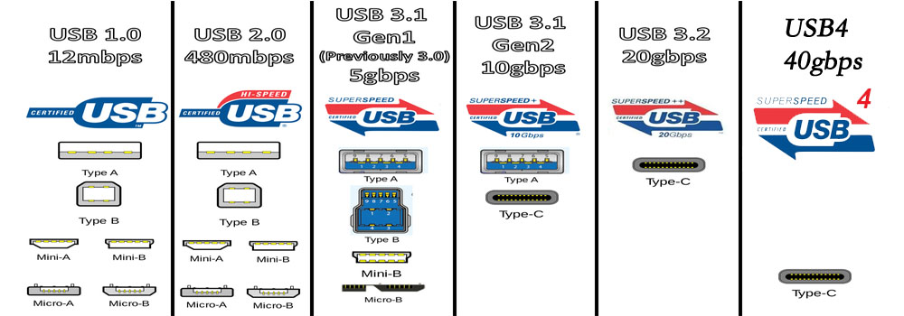
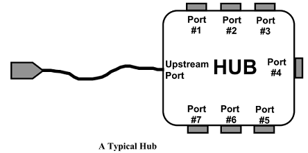
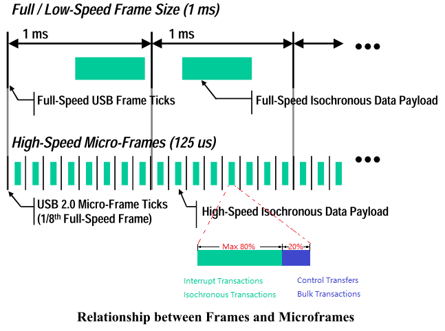
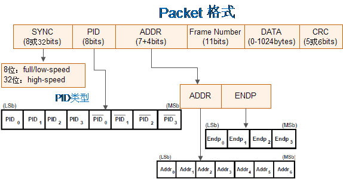

7.12.1. USB 简介¶
7.12.1.1. USB 发展历史¶
USB(Universal Serial Bus)通用串行总线是非常成功的一种总线技术，应用场景很广、发展也非常迅速。到现在一共经历了以下版本：
Version |
App |
Speed |
Direction |
Data Line |
|---|---|---|---|---|
USB 1.0 |
低速 Low Speed |
1.5Mbps |
Half 半双工模式 |
1对差分线 D+/D1 |
USB 1.1 |
全速 Full Speed |
12Mbps |
Half 半双工模式 |
1对差分线 D+/D1 |
USB 2.0 |
高速 Hi-Speed |
480Mbps |
Half 半双工模式 |
1对差分线 D+/D1 |
USB 3.1 Gen1 |
超高速 SuperSpeed |
5Gbps |
Full 双工模式 |
2对差分线 |
USB 3.1 Gen2 |
超高速 SuperSpeed+ |
10Gbps |
Full 双工模式 |
2对差分线 |
USB 3.2 |
超高速 SuperSpeed+ |
20Gbps |
Full 双工模式 |
4对差分线 |
USB 4.0 |
超高速 SuperSpeed+ |
40Gbps |
Full 双工模式 |
4对差分线 |

7.12.1.1.1. USB 1.0/2.0¶
在 USB 1.0/2.0 时期只需要用到 4 根线：1 根电源线、1 根地线、1 对差分数据线。因为只有 1 条数据通路，所以只能是半双工的，同一时间只能是接收或者发送数据。
使用 Type A 和 Type B 型的接口：
还有一系列小尺寸的变种：
7.12.1.1.2. USB 3.0¶
在 USB 3.0 时代从两个方向来增加速度：
增加传输的时钟速率。速率从 480M 增加到了 5G，高速信号会给 PCB 走线、EMC、线缆带来不小的压力。
增加差分数据通路的数量。首先发明了改进型的 USB3.0
Type A接口，在原有 4 线的基础上再增加了 5 条线：
可以看到增加的5条线分别为 1 条地线和 2 对差分数据线。因为有了 2 条数据通路，所以可以双工，同一时间能同时接收和发送数据。在工作在 USB 3.0 模式时，原来的 D+/D- 差分线是不使用的。
上图是 USB3.0 Type A 接口示意图，注意新增的 5条线已断针的形式隐藏在后面，这样的设计是为了和 USB 2.0 兼容。但是颜色改成了蓝色，以示区别。
在 USB 3.0 还出现了一种全新的接口类型 Type C 接口，它带来了以下好处：
接口线数量猛增到了 24 线，其中数据通路在
D+/D-之外再提供了 4 条差分数据线。实现了正反面任意插拔，大大方便了用户使用。
小技巧
从 USB 3.2 开始，因为它需要使用 4 对数据差分线，所以目前唯一支持的只有 Type C 接口。
7.12.1.1.3. 速度识别¶
首先通过 D+/D- 的上拉电阻来区分 USB 1.0 和 1.1 ：
D+上拉，USB 1.1Full-speed。D-上拉，USB 1.0Low-speed。
然后通过编码识别来进一步区分 High-speed 和 Full-speed。USB 2.0 High-speed 的 D+ 上拉，首先被当成 USB 1.1 Full-speed ：
Hub检测到有设备插入上电，向主机通报，主机发送 Set_Port_Feature 请求让 Hub 复位新插入的设备。设备复位操作是 Hub 通过驱动数据线到复位状态
SE0（即 D+ 和 D- 全为低电平），并持续至少 10ms。高速设备看到复位信号，通过内部的电流源向 D- 线持续灌大小为 17.78mA 电流。因为此时高速设备的 1.5k 上拉电阻未撤销，在 Hub 端，全速/低速驱动器形成一个阻抗为 45Ohm 的终端电阻，
1.5k 与 45Ohm 的电阻并联，仍然是 45Ohm，所以在 Hub 端看到一个约 800mV 的电压，这就是Chirp K信号。Chirp K信号持续 1ms ~ 7ms。在Hub端，虽然设置了复位信号，并一直驱动着
SE0，但 USB2.0 的高速接收器一直在检测Chirp K信号，如果没有Chirp K信号看到，就继续复位操作，直到复位结束，然后识别为全速设备。设备发送的
Chirp K信号结束后 100us 内，Hub 必须开始恢复一连串的KJKJKJ…序列，向设备表明这是一个 USB2.0 的 Hub。这里的 KJ 序列是连续的，中间不能间断，而且每个 K 或 J 的持续时间在 40us~60us。KJ 序列停止后的的100-500us 内结束复位操作。Hub 发送Chirp KJ序列的方式和设备一样，通过电流源向差分数据线交替灌 17.78mA 的电流实现。- 再回到设备端来。设备检测到 6 个 Hub 发送的
Chirp信号后（3 对KJ序列），它必须在 500us 内切换到高速模式。切换动作有： 断开 1.5K 的上拉电阻。
连接 D+/D-上 的高速终端电阻，实际上就是全速/低速差分驱动器。
进入默认的高速状态。执行上两步后，USB 信号线上看到的现象就发生变化，Hub 发送出来的
Chirp KJ序列幅值降到原来的一半，即 400mV。这是因为设备端挂载新的中断电阻，并联后的阻抗是 22.5Ohm。之后高速操作的信号幅度就是 400mV，而不像全速/低速那样的 3V。
- 再回到设备端来。设备检测到 6 个 Hub 发送的
USB Chirp K 、 Chirp J 、 SE0 信号定义：
信号 |
低速模式Low-speed |
全速速模式Full-speed |
高速模式High-speed |
|---|---|---|---|
Chirp J |
D+ = 0，D- = 1 |
D+ = 0，D- = 1 |
D+ = 1，D- =0 |
Chirp K |
D+ =1， D- = 0 |
D+ =1， D- = 0 |
D+ =0， D- = 1 |
SE0 |
D+ = 0， D- =0 |
D+ = 0， D- =0 |
D+ = 0， D- =0 |
IDLE |
K 状态 |
J 状态 |
SE0 状态 |
从 J 到 K 或者从 K 到 J，信号翻转，说明发送的信号是 0。从 J 到 J 或从 K 到 K，信号不变，说明发送的信号是 1。
Chirp J K 状态高速设备与低速设备相反。
对于 USB 3.0 以后的速度识别，暂未涉及。
7.12.1.1.4. OTG¶
USB OTG技术可实现没有主机时设备与设备之间的数据传输。例如：数码相机可以直接与打印机连接并打印照片，手机与手机之间可以直接传送数据等，从而拓展了USB技术的应用范围。
在OTG中，初始主机设备称为 A 设备 ，外设称为 B 设备 。也就是说，手机既可以做外设，又可以做主机来传送数据，可用电缆的连接方式来决定初始角色 (由 ID 线的状态来决定)。
在 Mini/Micro USB 接口一共有 5 根线，在原有 USB 的基础上多出了一根 ID 线。OTG的识别是通过 ID 脚的电平进行决定 OTG 作为 Device 还是 Host：
当OTG设备检测到接地的ID引脚时，表示默认的是 A 设备（主机），而检测到ID引脚浮空的设备则认为是 B 设备（外设）。
7.12.1.1.5. phy 总线¶
USB 信号传输前，需要通过 phy 把 usb 控制器的数字信号转成线缆上的模拟信号。usb 控制器和 phy 之间的总线主要有 3 种：
UTMI(USB2.0 Transceiver Macrocell Interface)。最早的 USB controller 和 USB PHY 通信的协议。
ULPI(UTMI+Low Pin Interface)。从名字上就可以看出 ULPI 是 UTMI 的 Low Pin版本
HSIC(USB 2.0 High Speed Inter Chip)。是 USB 2.0 的芯片到芯片变体，它消除了普通 USB 中的传统模拟收发器。速度可达 480M，是 IIC 的理想替代。
7.12.1.1.6. 传输编码方式¶
USB 信号在线路上传输时，需要采取合适的编码方式。
USB 1.0/2.0 采用的是 URZI (No Return Zero-Inverse) 编码。无需同步的时钟信号也能产生同步的数据存取。NRZI的编码规则是，当数据位为1时不转换，当数据位为0时转换，如下图所示。位传输的顺序以LSB优先。
这种编码方式会遇到一个严重的问题，若重复相同的1信号时，就会造成数据长时间无法转换，逐渐的累积而导致堵塞的情况，使得读取的时序出现严重的错误。因此，在 NRZI 编码之间，还需执行所谓的位填塞（bit-stuffing）。即是，若原始的串行数据含有连续的 6 个 1 时，就执行位填塞工作，填塞一个 0。
USB 3.0 采用的是 8b/10b 编码。
USB 3.1/3.2 采用的是 128/132 (64b/66b) 编码。
7.12.1.2. 总线拓扑¶
USB 是 星型 拓扑总线，由 Hub 来进行多级扩展。最大的层级不能超过 7 层，在任何一条路径上不能超过 5 个非根 Hub。
USB 总线由 3 种角色组成：
Host。星型总线的中心，配置所有 Hub 和 Device，调度总线上所有的数据收发。Hub。提供了扩展端口，能连接更多的 Device。Hub 本身也是一种特殊的 Device。Device。提供了实际的设备功能。
经过几种角色的组合以后，USB 总线形成了逻辑上的星型拓扑，Host 到任一 Device 都是点对点传输。
7.12.1.2.1. Device 内部的逻辑关系¶
USB 将 Device 内部的资源进一步细分成了3个层级： Configuration 配置、 Interface 接口、 Endpoint 端点。
Configuration配置
每个 USB 设备都可以包含一个或者多个配置，不同的配置使设备表现出不同的功能组合，配置有多个接口组成。在 USB 协议中，接口由多个端点组成，代表一个基本的功能。
看下面的一个例子。一个 USB 播放器带有音频视频功能，还有旋钮和按钮。那么这个 Device 设备 可以提供 3 种 Configuration 配置：
配置1：音须(接口) + 旅钮(接口）
配置2: 音频(接口) + 视频(接口) + 按钮(接口）
配置3：视频(接口) + 旋钮(接口）
Interface接口 /Function功能
Interface 接口代表一个独立的基本的功能，所以有时也称之为 Function 功能。如果我们开发 USB Client 驱动，我们面向的对象就是 USB Interface ，上述实例中的音烦接口、视频接口、投钮接口、旋钮接口均需要一个独立的 USB Client 驱动程序。
一个 Interface 接口中包含了完成这个基本功能的所需要的一个或者多个 Endpoint 端点。
Endpoint端点 (Pipe管道)
端点是 USB 设备中最基本的可寻址单位，它是位于 USB 设备或主机上的一个数据缓冲区，用来存放和发送 USB 的各种数据。
设备的 Endpoint 0 是一个特殊端点，在设备初始化时系统需要使用该端点读配置设备。其他编号的端点
USB Client 驱动都可以使用。
一个 Host 主机和一个设备 Device 的端点建立的连接称之为 Pipe 管道：
7.12.1.2.2. Compound / Composite Device¶
在 USB 协议描述中，有两个非常相近的名字： Compund Device 和 Composite Device 。正确的理解的它们有助于我们理解清楚随后的一些概念。
Compund Device。指的是一个Hub设备中，还包含了其他的功能Device。Composite Device。指的是一个Device当中，包含了多个Interface，能提供多个独立的功能。
7.12.1.2.3. Hub¶

在 USB 的总线结构中，Hub 是一个重要的组成成员，它主要的作用是控制 Port 端口来连接更多的 USB Device 设备。
它的核心点如下：
USB Host 需要给总线上的设备分配不同的地址才不会冲突，USB 的星形拓扑连接设备都是通过 Hub 的端口连结到总线上的。
总线初始化枚举设备时，USB 设备的地址都是默认地址 0，但是 Hub 的端口都是关闭的所以并不产生设备冲突，Host 逐个打开 Hub 的端口，逐个利用打开端口上设备的默认地址 0 来配置设备，给其分配新的地址，从 Endpoint 0 中读出设备的配置并设置。在运行过程中 USB 设备的热插拔也是和这类似的。
7.12.1.2.4. Configure Descriptor¶
对于一个 USB 设备，在 Device 、 Configuration、 Interface、 Endpoint 每个层次上都有对应的描述信息。可以使用 Endpoint0 在设备初始化的时候读出和配置这些信息。
最重要的是设备在初始化时，通过这些信息来进行枚举配置的过程。一个设备枚举的过程分为如下 8 步：
获取设备描述符
Host/Hub 通过数据线上拉电阻的阻值变化检测到新设备接入。Host 等待 100ms 以保证设备电源稳定。
Host 向 Device 发 Bus Reset 使得设备进入 default 状态，从此之后，设备可以响应默认地址 0 。
Host 请求 Device 发送 Device Descriptor 的前 64 个字节。
复位
Host 在收到 Device Descritptor 的前 8 个字节后，再次向 Device 发出 Bus Reset。
设置地址
Host 发送一个 Set Address 命令给 Deivce，从此 Device 有个通信地址，不再使用默认地址 0 进行通信。
再次获取设备描述符
Host 请求获取完整的 Device Descritpor, 总计 18 字节。
获取配置描述符
Host 请求获取 9 个字节的 Configuration Descriptor 以了解 Configuration escriptor的总大小。
Host 请求 255 字节的 Configuration Descritpor。
获取接口，端点描述符
获取字符串描述符
选择设备配置
7.12.1.3. 总线调度¶
USB 作为一个高速总线，它需要充分利用起其带宽，并且能承担其多种业务类型的数据包的传输。
对数据传输来说，最重要的有几种因素 带宽 、 时间延迟 、 完整性校验 。根据这几种因素的组合，USB 把数据传输分成了 4 类：
Type |
KeyPoint |
Sample |
Descript |
|---|---|---|---|
Control |
完整性校验 |
USB |
突发的、非周期性的，主机软件发起的请求/响应通信 |
Isochronous |
带宽 、 |
摄像头 |
等时传输:主机和设备之间定期、连续的通信，通常用 |
Interrupt |
时间延迟 、 |
键盘、 |
低频、有边界延迟通信。对时间延迟要求高，但数据量 |
Bulk |
带宽 、 |
文件存储 |
非周期性、大包突发通信，通常用于可以使用任何可用 |
USB使用以下方法来满足多种类型的数据在一条共享通道上传输：
时间延迟。从时间维度上把数据传输切成多个时间片，在每个时间片内绝大部分份额 (最多 80%) 优先传输对时间延迟有要求的数据，如Interrupt Transfers、Isochronous Transfers。在时间片剩下的额度内传输对时间延迟没要求的数据，如Control Transfers、Bulk Transfers。完整性校验。对需要保证数据完整性的数据加上了 CRC 校验，接收端使用 ACK 来知会发送端正确接收，如果没有收到 ACK 发端会尝试重发 3 次。
7.12.1.3.1. Frames / Microframes¶

如上图，USB从时间维度上把数据传输切成多个时间片：
Frames。Low-speed 和 Full-speed 的时间切片大小为1ms，USB 控制器每1ms重新调度一下传输。Microframes。High-speed 的时间切片大小为125us，USB 控制器每125us重新调度一下传输。
这个时间切片，和操作系统上 Schedule Tick 的概念是一样的。
在数据格式传输上又会进一步细分：
Transfer。每个时间片的所有传输称之为一个Transfer，或者为一个Frames/Microframes。Transcation。根据某次数据传输的目的，一个Transfer可以分成多个Transcation事务。Packet。数据传输的最小单位，一个Transcation可能由多个Packet组成。
7.12.1.3.2. Bulk Transactions¶
上图可以看到 Bulk 类型的 In/Out Endpint 在数据收发时的状态流程图：
NAK。接收端数据未准备好。
ACK。接收端接收到数据且数据校验正确。
不回应。接收端接收到错误数据，发端会重发 3 次。
7.12.1.3.3. Control Transfers¶
Control 类型 和 Bulk 类型的处理类似。
7.12.1.3.4. Interrupt Transactions¶
Interrupt 类型对 完整性校验 也是有要求，处理流程和前面一样。
7.12.1.3.5. Isochronous Transactions¶
Isochronous 类型是唯一对 完整性校验 没有要求的，所以它的数据不需要
ACK 回应。
7.12.1.3.6. USB 和 PCIE 调度的区别¶
PCIE 总线也是一个非常成功和流行的总线，从底层来说它和 USB 总线是非常像的：
它也是高速串行总线。
它也是共享性的总线。都是把带宽逻辑切割成多份，分给不同的 Device 和驱动。
但是它又看起来和 USB 如此的不同，主要的差异就在总线的调度上面：
PCIE 硬件使用了一个专门的仲裁器来做总线调度，所以在 Device 配置好以后，所有的 Mem/Io 空间被映射到一个统一地址空间当中，只要发起普通的读写操作就能访问。而 USB 的总线调度被暴露了出来，需要硬件软件共同配合才能完成。毫无疑问，PCIE 的硬件复杂度和成本会远远高于 USB。
另外由于 PCIE 有独立的仲裁器来进行调度，所以 PCIE 支持多个设备同时操作总线。而 USB 的所有操作都需要 Host 来调度，所以只能由 Host 发起总线操作。从效率来说 USB 要低。
还有一点 PCIE 硬件仲裁器对软件是透明的，所以软件读写总线是
同步的。而软件操作 USB 总线是异步的，通过回调的操作来进行 USB 和 CPU 之间的状态对齐。
7.12.1.4. 传输格式¶
上文说过一个传输时间片 Tranfer/Frame/MicroFrame，可以分割成多个 Transaction 事务，一个 Transaction 事务又可以细分成多个 Packet 包。

7.12.1.4.1. Packet¶
Packet 包是 USB 传输的最小单位，由五部分组成：
同步字段（SYNC）
包标识符字段（PID）
数据字段
循环冗余校验字段（CRC）
包结尾字段（EOP）

主要的数据包格式有四类，对应不同的 PID 类型：
7.12.1.4.1.1. Token Packet¶
此格式适用于 IN、OUT、SETUP、PING。
7.12.1.4.1.2. Data Packet¶
有四种类类型的数据包：DATA0, DATA1, DATA2,and MDATA，且由PID来区分。DATA0 和 DATA1 被定义为支持数据切换同步 (data toggle synchronization)。
7.12.1.4.1.3. Handshake Packet¶
ACK: 对于 IN 事务，它将由 Host 发出；对于 OUT、SETUP 和 PING 事务，它将由 Device 发出。
NAK: 在数据阶段，对于 IN 事务，它将由 Device 发出；在握手阶段，对于 OUT 和 PING 事务，它也将由Device 发出，Host 从不发送 NAK 包。